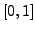

The computation of a Sock Diagram is an optional add-on of SIGSPEC. If the keyword sock:phases is given in the .ini file, SIGSPEC computes sock significances, i.e. sig levels for a constant signal-to-noise ratio at a set of different phase angles, and for all frequencies for which spectra are calculated. As described by Reegen (2007), the expected sig level for a given amplitude signal-to-noise ratio at constant frequency and phase angle is proportional to the squared amplitude signal-to-noise ratio. Sig levels in the Sock Diagram are normalised to an expected value of 1, corresponding to an amplitude signal-to-noise ratio
| (10) |
Furthermore, the phase angle in the Sock Diagram is given with respect to , i.e. the phases with maximum sock significance are consistently aligned to zero phase for all frequencies.
The number of phase angles in the interval
 to be taken into account for each frequency of the spectrum has to be given as an argument to the keyword sock:phases in the .ini file. The sig levels in the phase intervals
to be taken into account for each frequency of the spectrum has to be given as an argument to the keyword sock:phases in the .ini file. The sig levels in the phase intervals
 and
are symmetric according to
and
are symmetric according to
| (11) |
To enhance the quality of Sock Diagrams produced by SIGSPEC, the keyword sock:fill can be provided to specify a fill factor (as a floating-point number following the keyword). It is used for adaptive oversampling of frequencies according to the differences of maximum sigs for consecutive frequencies. The fill factor is the (rounded) number of additional frequencies per unit of sig difference. In other words, providing sock:fill 10 guarantees that the resolution of the resulting Sock Diagram along the sig axis does not exceed 0.1, and an appropriate combination of the keywords sock:phases and sock:fill produces a Sock Diagram that mimics a continuous surface when plotted in 3D style. The default argument of sock:fill is 0, which means that adaptive oversampling is switched off.
Caution: the Sock Diagram may become a huge file! Especially for very low frequencies, a tremendous amount of data may be expected. Thus it is advisable either to exclude this frequency region (keyword lfreq) or to assign very low values to sock:phases and sock:fill.
The user may choose to obtain the Sock Diagram in three-dimensional cylindrical (default, or keyword sock:cyl) or cartesian coordinates (keyword sock:cart).
In any case, the output file sock.dat consists of three columns. In cylindrical coordinates, the columns refer to
The keywords sock:colmodel:lin and sock:colmodel:rank permit to choose between two different colour models assigning RGB colours to the data points of the Sock Diagram. The linear model (sock:colmodel:lin) uses the sock significance as it is for colour scaling, whereas the rank model (sock:colmodel:rank) relies on a rank statistics of sock significances.
Caution: the computation of ranks may be very time-consuming! The progress control displayed during the calcucation of the rank statistics does not provide linear percentages in time. The percentage values refer to the portion of ranks among the number of data points that are finished.
A sequence of keywords sock:colour determines a colour path that is assigned to the data points in the Sock Diagram. The keyword is followed by four floating-point arguments. The first three arguments refer to the three RGB channels. Using the linear model (sock:colmodel:lin), the fourth argument is the sock significance to which the given colour has to be assigned. For the rank model (sock:colmodel:rank), the fourth argument is a floating-point value in the interval  and determines the fractile of data points to which the given colour has to be assigned. A value of, e.g., 0.5 assigns the specified colour to the median of sock significances. SIGSPEC performs a linear interpolation along this colour path and assigns a fourth column to the output file sock.dat containing RGB values. For entries beyond the start or end of the colour path, the start or end colour is used, correspondingly.
Example. A linear colour model that produces colours from white via red, yellow, green, cyan, blue, and magenta to black is produced by the following specifications:
sock:colmodel:lin
sock:colour 255 255 255 .5
sock:colour 255 0 0 .9
sock:colour 255 255 0 .95
sock:colour 0 255 0 1
sock:colour 0 255 255 1.05
sock:colour 0 0 255 1.1
sock:colour 255 0 255 1.2
sock:colour 0 0 0 2
Example. A rank colour model producing greyscale coding is obtained by:
sock:colmodel:rank
sock:colour 0 0 0 0
sock:colour 255 255 255 1
Example. The Sock Diagram in the sample project output is generated according to the following entries in the file output.ini:
sock:cyl
sock:phases 45
sock:fill 10
sock:colmodel:lin
sock:colour 255 255 255 0.98
sock:colour 0 0 0 1.02
The resulting file output/sock.dat is displayed in Fig.13.


Next: Phase Distribution Diagram
Up: Analysis of the Time-domain
Previous: Sampling profile
Contents
Piet Reegen
2009-09-23